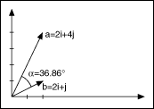
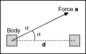

If X represents a vector and Y represents another vector, the dot product of these two vectors is obtained by multiplying the corresponding elements of each vector and adding the results. This is denoted by
where n is the number of elements in X and Y. Both vectors must have the same number of elements. The dot product is a scalar quantity and has many practical applications.
For example, consider the vectors a = 2i + 4j and b = 2i + j in a two-dimensional rectangular coordinate system, as shown in the following figure.

Then the dot product of these two vectors is given by
The angle α between these two vectors is given by
where |a| denotes the magnitude of a.
As a second application, consider a body on which a constant force a acts, as shown in the following figure. The work W done by a in displacing the body is defined as the product of |d| and the component of a in the direction of displacement d. That is,

On the other hand, the outer product of these two vectors is a matrix. The (i, j)th element of this matrix is obtained using the formula
For example,